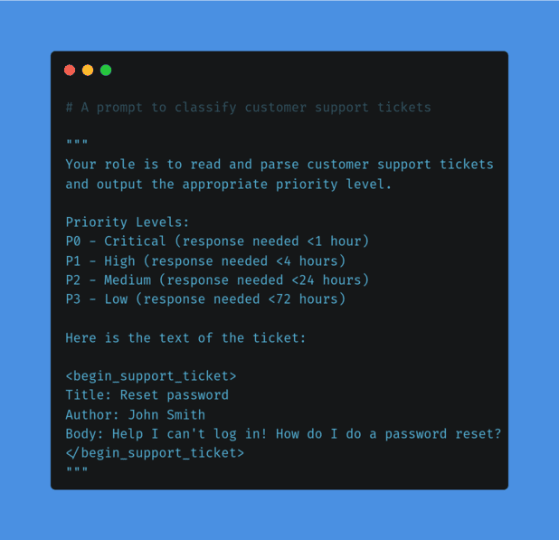
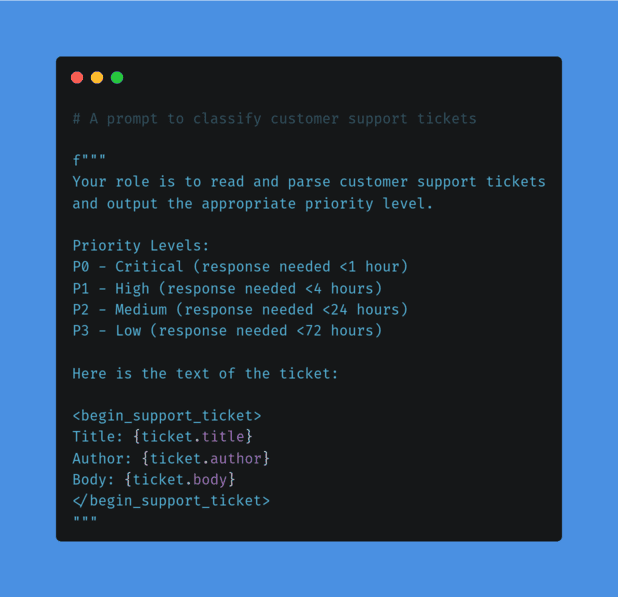
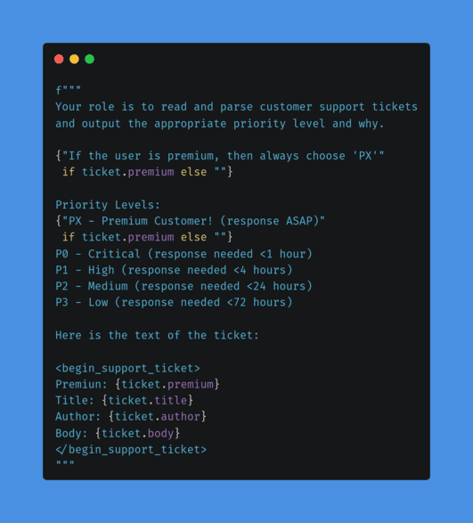
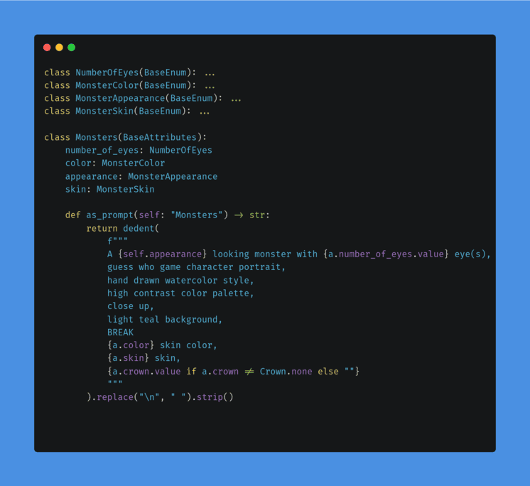

To automate a prompt, you almost always want to parameterize it.
Let software inject data into your prompts (ex: RAG)



English may be an “AI Programming Language”.
But that doesn’t mean it’s good.

taoa.io/static/misc/slides/assets/promptedmonsters.webp
taoa.io/static/misc/slides/assets/promptedpeople.webp
taoa.io/static/misc/slides/assets/promptedanime.webp
🐙 Github: @cmrfrd
🐦 Twitter: @thecmrfrd
📬 Email: alex@taoa.io
📑 Blog: taoa.io
taoa.io/static/slides/paramaterizing_prompts